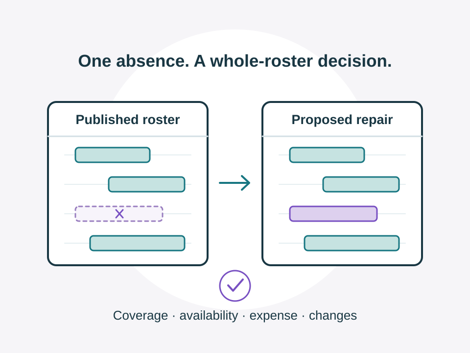

Service and experience operations / Restaurant roster repair
A cook called out. The rest of the roster still has to work.
Follow Elena from a missing Saturday cook to complete staffing alternatives, then see how an explicit priority changes which repair is preferred.

Restaurant roster repair / Articles
First establish what works. Then decide what to prefer.
The first article examines complete repairs and a change in availability. The second holds the staffing facts fixed and compares two explicit priorities.
A Saturday callout threatens Elena’s dinner service. Use the restaurant roster workflow to compare complete repairs and see how an earlier departure changes which proposal works.
The same staffing facts support two complete roster repairs. Use the workflow’s comparison priority to see why preserving published assignments or minimizing payroll changes the preferred proposal.
The recurring problem, the approach and the working implementation.
Level
In this case
Problem family
Allocate limited qualified people across time while preserving the required coverage of the remaining services. Explore complete arrangements.
Decision pattern
Repair a published staffing commitment by comparing complete feasible alternatives, then select a repair under an explicit priority. Explore Repair a Disrupted Commitment.
Supporting reasoning
The commitment assessment checks four complete roster repairs for coverage, qualifications, availability, working limits and expense. A separate explicit priority orders the feasible repairs; its conclusion remains scoped to the supplied candidates. See what each assessment establishes.
Implementation
Hermod’s published Marketplace workflow uses Complete a Commitment through three pinned apps. The same operating facts establish feasibility; selecting a published priority activates the relevant comparison. Forms, reports and the decision-process graph expose that structure. People agree and communicate any actual roster change.
Restaurant roster repair / Working example
Try the same roster decision.
Open Repair a published restaurant roster in Decision Lab. The link installs the Restaurant operations collection when needed and opens a new analysis with the supplied fictional roster. Choose Calculate to find the passing complete repairs. You can also find the workflow under Restaurant operations and choose Explore example.
Under Repair decision, change Rowan’s Availability, the Payroll boundary or the Comparison priority. Apply changed inputs and Recalculate. The Decision summary separates Options, Next actions, Assumptions and Questions. Named links beside each repair open its relevant supporting report. Supporting reports show the repair comparison, complete roster and payroll basis; expand Requirements to inspect the individual checks. In Complete roster, select a Service position to compare its people and timing across the supplied repairs. Check the exact definition version in Case details and the current figure receipt. Older saved cases retain their definitions. This example uses its configured people, positions and four proposals. A different restaurant roster requires an adapted author profile.
In Decision process, follow the questions from the missing assignment to the passing repairs and any declared preference. Inspecting a position or process step does not choose a repair, obtain agreement or publish the roster.
Download the exact worked cases
These native runs preserve the tested definition, pinned apps, applied inputs and calculated findings. Use My cases → Import workflow run to continue one in a compatible Decision Lab build. Check its definition and runtime requirements rather than assuming an older installation has updated.
Alex faces the same staff-allocation family: people sent outside are unavailable for floor coverage. His venue has different roles, conditions and financial questions.